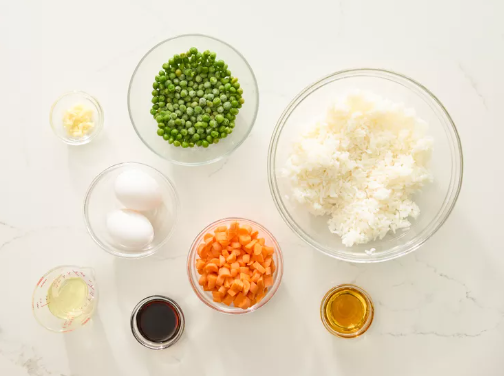

This fried rice recipe only takes 15 minutes to cook and tastes just like you get at your favorite Chinese restaurant. Leftover rice, plus a couple of eggs, baby carrots, peas, and soy sauce is all you need. Garnish with sliced green onions, if desired.
Assemble Ingredients
Place carrots in a small saucepan and cover with water. Bring to a low boil and cook for 3 to 5 minutes. Stir in peas, then immediately drain in a colander.
Heat a wok over high heat. Pour in vegetable oil, then stir in carrots, peas, and garlic; cook for about 30 seconds. Add eggs; stir quickly to scramble eggs with vegetables.
Stir in cooked rice. Add soy sauce and toss rice to coat. Drizzle with sesame oil and toss again.
Serve hot and enjoy!